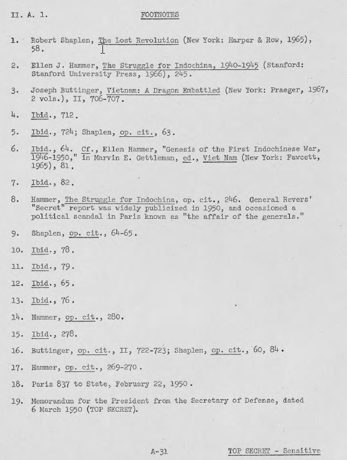
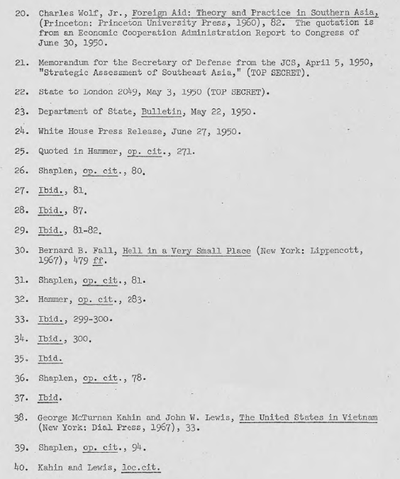
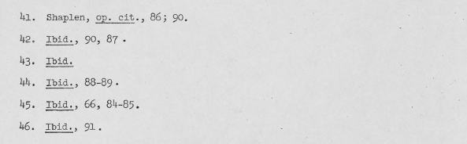

"Giải pháp Bảo Đại" là phụ thuộc vào hỗ trợ của Mỹ. Trong những năm 1950, các cuộc đàm phán tại Pau, Pháp, Thủ tướng Chính phủ Trần Văn Hữu của Bảo Đại đã được gọi trở về Đông Dương bởi một loạt các đảo ngược [tình thế] của quân đội Pháp ở Bắc Kỳ. Trần Văn Hữu nắm lấy cơ hội này để kêu gọi Hoa Kỳ "là một quốc gia dân chủ hàng đầu", và hy vọng rằng Hoa Kỳ sẽ:
"… áp lực lên Pháp để [VN] đạt được tự do dân chủ. Chúng tôi muốn được quyền quyết định các vấn đề riêng của chúng tôi cho chính chúng tôi." 15/
Trần đòi hỏi Hiệp Định Elysée phải được thay thế bằng một quyền tự quyết thực sự cho Việt Nam:
"Không cần thiết phải để cho những người trẻ phải chết để một kỹ sư người Pháp có thể được làm giám đốc cảng Sài Gòn. Nhiều người chết mỗi ngày vì Việt Nam không được độc lập. Nếu chúng tôi đã có độc lập thì dân chúng sẽ không có lý do để chiến đấu. "
Chuyện Trần nói với Hoa Kỳ là điều thực tế, nếu không phải là đúng đắn, vì Hoa Kỳ đã tham gia ở Đông Dương như là một phần của một tam giác rắc rối với Pháp và chế độ Bảo Đại. Thật vậy, Hoa Kỳ đã có một vai trò quan trong "giải pháp Bảo Đại" từ khi nó thành lập. Ngay trước khi Hiệp định Vịnh Hạ Long, sáng kiến Pháp đã nhận được một số hỗ trợ từ tháng mười hai năm 1947, như bài viết trong tạp chí Life của William C. Bullitt, cựu Đại sứ Hoa Kỳ tại Pháp. Bullitt lập luận [ủng hộ] cho một chính sách nhằm chấm dứt "cuộc chiến đáng buồn nhất" bằng cách lấy lại được phần lớn phe Việt Nam quốc gia trong tay Hồ Chí Minh và trong tay những người Cộng sản thông qua một phong trào xây dựng xung quanh Bảo Đại. 16/ Quan điểm của Bullitt được chấp nhận rộng rãi tại Pháp như là một tuyên bố về chính sách của Mỹ, và một chứng thực trực tiếp và lời hứa viện trợ của Hoa Kỳ, cho Bảo Đại. Bảo Đại, cho dù ông chấp nhận tin vịt Bullitt hay không, dường như đã cảm nhận rằng Hoa Kỳ chắc chắn sẽ bị hút vào khu vực Đông Nam Á, và dường như đã chờ đợi rằng sự tham gia của Hoa Kỳ sẽ được đi kèm với việc Hoa Kỳ sẽ làm áp lực trên Pháp nhân danh dân tộc Việt Nam. Tuy nhiên, Hoa kỳ, mặc dù nhận thức cao về tình thế tiến thoái lưỡng nan của Pháp, ban đầu miễn cưỡng đồng ý giải pháp Bảo Đại cho đến khi nó trở thành hiện thực. Các thông điệp của Bộ Ngoại Giao [Hoa Kỳ] sau đây đưa ra quan điểm của Mỹ:
Ngày 14 tháng 8, 1948 (Bộ số 2637 gửi Paris):
"Một Hiệp định [vịnh Hạ Long] kèm theo những thay đổi về tình trạng của Nam Kỳ đã được phê duyệt. Bộ sẵn sàng xem xét đưa ra những ủng hộ của mình để thúc đẩy thêm sự thừa nhận công khai về hành động của Chính phủ Pháp là để hướng tới một giải pháp tương lai cho tình hình khó khăn ở Đông Dương và hướng tới việc thực hiện nguyện vọng của nhân dân Việt Nam. Điều như Bộ đã nêu ở trên đây cho thấy sự chấp thuận của Hoa Kỳ là sẽ hổ trợ về vật chất để tăng sức mạnh của phe quốc gia để chống lại cộng sản ở Đông Dương... "
Ngày 30 tháng 8, 1948 (Bộ số 3368 gửi Paris):
"Bộ thông hiểu rõ những khó khăn mà bất kỳ Chính phủ Pháp nào lấy hành động quyết định đối với Đông Dương, chỉ có thể nhìn thấy tình hình xấu đi một cách nhanh chóng trừ khi Hiệp định [Vịnh Hạ Long] với nhiều thỏa thuận tích cực hơn, những luật lệ ban hành và những hành động sẽ cho phép thay đổi tình trạng của Nam Kỳ, và ngay lập tức khởi đầu việc đàm phán chính thức nhằm tới Hiệp định đó. Bộ tin rằng không được bỏ qua bất cứ chuyện gì có thể tạo sức mạnh cho phe Quốc Gia và xúi những người hiện tại đang ủng hộ Việt Minh quay về phe của nhóm đó [quốc gia]. Chuyện xúi bảo đó không thể thực hiện được trừ khi nhóm này đưa ra được những bằng chứng cụ thể là Pháp đang chuẩn bị để nhanh chóng hình thành một chính phủ Việt Nam Tự Do nằm trong Liên Hiệp Pháp, và có tất cả các thuộc tính của một chính thể tự do".
Ngày 17 tháng 1, 1949 (Bộ số 145 gửi Paris):
"Trong khi Bộ mong muốn Pháp tiếp cận Bảo Đại hay bất kỳ nhóm thực sự quốc gia nào có cơ hội hợp lý để đạt ưu thế [chính trị] đối với người Việt Nam, vào thời điểm này chúng ta không thể [sic] cam kết hỗ trợ cho một chính phủ bản địa mà họ không được lòng người Việt Nam, có thể trở thành gần như là một chính phủ bù nhìn, tách nó ra khỏi người dân, và hiện diện chỉ bởi vì có sự hiện diện của quân đội Pháp…”
Hiệp định Elysee đã diễn ra vào tháng ba năm 1949. Tại thời điểm này, sự thất bại của Trung Quốc [Quốc Dân Đảng] thúc ép; và Hoa Kỳ đã bắt đầu xem xét "giải pháp Bảo Đại" với một cảm giác cấp bách:
Ngày 10 tháng 5, 1949 (Bộ số 77 gửi Paris):
"Giả định rằng... mong muốn của Bộ về cuộc thử nghiệm với Bảo Đại thành công là hoàn toàn chính xác. Vì từ khi dường như không có giải pháp thay thế nào cho mô hình cộng sản đang hiện hửu ở Việt Nam, Bộ cho rằng không một nỗ lực nào được bỏ qua bởi Pháp, hay các cường quốc phương Tây, và cả những nước Á Châu không cộng sản để đảm bảo cơ hội thành công tốt nhất cho cuộc thí nghiệm.
"Vào thời điểm và hoàn cảnh thích hợp, Bộ sẽ chuẩn bị sẵn sàng để thực hiện về phần của mình bằng cách đưa ra việc công nhận Chính phủ Bảo Đại và bằng cách khai thác mọi khả năng có thể phù hợp với mọi yêu cầu của Chính phủ này về viện trợ vũ khí và kinh tế. Phải được hiểu rằng, tuy nhiên, đương nhiên chương trình viện trợ này sẽ phải được Quốc hội phê duyệt. Khi mà Hoa Kỳ khó có thể đủ khả năng ủng hộ một chính phủ mà màu sắc của nó, và có khả năng chịu chung số phận của một chế độ bù nhìn, thì trước tiên [chúng ta] phải rõ ràng với Pháp là họ sẽ đưa ra tất cả những nhượng bộ cần thiết để làm cho giải pháp Bảo Đại trở nên hấp dẫn cho phe quốc gia.
"Đây là một bước mà Pháp phải tự thấy tính cấp bách và cần thiết trong viễn ảnh chỉ còn một thời gian ngắn trước khi việc Cộng Sản thành công ở Trung Quốc được cảm nhận ở Đông Dương. Hơn nữa, chính phủ Bảo Đại phải tự nỗ lực để chứng minh khả năng tổ chức và điều hành công việc một cách khôn ngoan để đảm bảo cơ hội tối đa được nhân dân hỗ trợ, bởi vì bất kỳ chính phủ nào được tạo ra ở Đông Dương tương tự như [Trung Hoa] Quốc Dân Đảng cũng sẽ có một thất bại được đoán trước.
" Giả định rằng..... những nhượng bộ thiết yếu sắp tới được Pháp đưa ra, cơ hội thành công tốt nhất cho Bảo Đại sẽ xuất hiện để thuyết phục phe quốc gia Việt Nam:
Cho tới năm 1949, các quân đoàn của Mao tiếp tục tiến về phía nam của Trung Quốc, và Việt Minh đã hiển nhiên chuẩn bị thiết lập quan hệ với họ.
b. Thừa nhận, 1950
Hiệp định Elysee đã được mười một tháng trước khi Hoa Kỳ nhận định rằng Pháp đã thực hiện các bước cụ thể đối với quyền tự chủ của Việt Nam mà Hoa Kỳ đã thiết lập như là điều kiện để [Mỹ] công nhận Bảo Đại. Vào cuối tháng Giêng, 1950, sự kiện biến chuyển nhanh chóng. Hồ Chí Minh tuyên báo rằng của chính phủ của ông là "chính phủ hợp pháp duy nhất của người dân Việt Nam" và cho biết VNDCCH sẵn sàng hợp tác với bất kỳ quốc gia nào sẵn sàng công nhận nó trên cơ sở “bình đẳng và tôn trọng lẫn nhau về chủ quyền quốc gia và vùng lãnh thổ". Mao phản ứng tức thời công nhận, theo sau là Stalin. Ở Pháp cuộc tranh luận gay gắt trong Quốc hội giữa những người cánh tả ủng hộ thỏa thuận ngừng bắn ngay lập tức với Việt Minh và những người ủng hộ Hiệp định Elysee của chính phủ tiến hành giải pháp Bảo Đại. René Pleven, Bộ trưởng Bộ Quốc phòng [Pháp], tuyên bố rằng: 17/
"Điều cần thiết là người dân Pháp phải biết rằng tại thời điểm hiện tại kẻ thù duy nhất của hòa bình ở Việt Nam là Đảng Cộng sản. Bởi vì các thành viên của Đảng Cộng sản biết rằng hòa bình ở Đông Dương sẽ được thành hình với chính sách độc lập mà chúng ta đang theo đuổi."
(“Hòa bình cho Việt Nam!!! Hòa bình cho Việt Nam!!!” những người cộng sản [Pháp] hô to. )
Jean Letourneau đứng dậy và xác định rằng:
"Đây không phải là một vấn đề chấp thuận hay không chấp thuận một chính phủ, chúng ta đã vượt rất xa ra ngoài sự sống của một chính phủ tạm thời trong một vấn đề hết sức nghiêm trong. Điều cần thiết là, ở cấp độ quốc tế, cuộc bỏ phiếu diễn ra tối nay thực sự cho thấy tầm quan trọng lớn lao của sự kiện này dưới con mắt của toàn thế giới. "
Frédéric Dupont nói:
"Cuộc chiến tranh Đông Dương đã luôn luôn là một bài trắc nghiệm cho Liên hiệp Pháp trước cộng sản quốc tế. Nhưng kể từ khi sự xuất hiện của những người Cộng sản Trung Quốc ở biên giới Bắc Kỳ, Đông Dương đã trở thành biên giới của nền văn minh phương Tây và chiến tranh ở Đông Dương được nhập chung vào chiến tranh lạnh".
Thủ Tướng Geaorges Bidault là người lên diễn đàn sau cùng:
"Sự lựa chọn là đơn giản. Hơn nữa, không có sự lựa chọn."
Quốc hội bầu vào ngày 29 tháng 1 năm 1950, tỷ số 396 thuận 193 chống. Từ nhóm phe tả cực đoan có tiếng hô "Đả đảo chiến tranh!" và Paul Coste Floret [dân biểu tỉnh Héraut từ 1946-1958] trả lời: "Hòa bình muôn năm." Ngày 02 tháng 2, 1950, Pháp tuyên bố chính thức phê chuẩn của nền độc lập của Việt Nam.
Việc đánh giá tình hình và hành động của Hoa Kỳ như sau:
(điện tín sao chép trang A-15 và A-16)
Bộ NGOẠI GIAO
Washington
Ngày 2 tháng 2, 1950
BẢNG GHI NHỚ GỬI TỔNG THỐNG
Chủ đề Hoa Kỳ công nhận Việt Nam, Lào và Campuchea
Nổ lực để chống lại [Việt Minh], Pháp, về quân sự triển khai khoảng 130.000 binh sĩ, trong đó khoảng 50.000 người bản xứ phục vụ tự nguyện, những người từ các thuộc địa châu Phi, và thành phần chỉ huy là thuộc quân đội Pháp và các đơn vị Legion nước ngoài [Légion Étrangère là một đội quân thiện chiến đặc biệt gồm người nước ngoài – đa số là da trắng - nhưng chỉ huy là Pháp]. Chiến thuật du kích của Hồ Chí Minh đã được dùng nhằm mục đích đánh đuổi Pháp ra khỏi Việt Nam. Ngày 8 tháng 3, 1949 Tổng thống Pháp ký thỏa thuận với Bảo Đại là người đứng đầu của nhà nước [VN], công nhận Chính phủ Việt Nam độc lập trong Liên hiệp Pháp. Thoả thuận tương tự đã được ký kết với Vua Lào và Quốc vương Cam-pu-chia.
Những biến chuyển gần đây bao gồm Cộng sản Trung Quốc chiến thắng và đã đưa quân đến gần biên giới Đông Dương, việc công nhận Hồ Chí Minh là người đứng đầu của Chính phủ hợp pháp Việt Nam bởi Cộng sản Trung Quốc (ngày 18 tháng 1) và Liên Xô (30 tháng 1) [1950].
Tùy thuộc vào sự phê duyệt của Ngài, Bộ Ngoại giao khuyến cáo rằng Hoa Kỳ mở rộng việc công nhận cho Việt Nam, Lào và Cam-pu-chia, sau khi Chính phủ Pháp phê chuẩn.
(ký tên) DEAN ARCHSON
Phê duyệt đồng ý
(ký tên)
Harry S. Truman
Ngày 3 tháng 2, 1950
Ngày 16 tháng 2 năm 1950, Pháp yêu cầu Hoa Kỳ hỗ trợ quân sự và kinh tế để tiếp tục chiến tranh Đông Dương. 18/ Bộ Trưởng Quốc phòng trong một bản ghi nhớ gửi Tổng thống vào ngày 06 tháng 3 nói rằng:
"Lựa chọn mà Hoa Kỳ phải đối diện là hoặc hỗ trợ các chính phủ hợp pháp ở Đông Dương hoặc phải đối mặt với việc chủ nghĩa cộng sản mở rộng chiếm phần còn lại của khu vực Đông Nam Á và có thể cả về phía Tây của lục địa …” 19/
Cùng tháng đó, Bộ Ngoại giao cử một phái đoàn do R. Allen Griffin dẫn đầu có nhiệm vụ khảo sát viện trợ cho Đông Dương (và Miến Điện, Indonesia, Thái Lan và Malaysia). Sứ mệnh của Griffin là đề xuất (gồm cả những chuyện khác) viện trợ cho chính phủ Bảo Đại, kể từ khi Nhà nước Việt Nam được coi là:
“…không an toàn chống lại một cuộc lật đổ nội bộ, xâm nhập chính trị, hoặc xâm lược quân sự.
"Mục tiêu của từng chương trình là hỗ trợ càng nhiều càng tốt để tăng sức mạnh, và khi làm như vậy.. để đảm bảo cho nhân dân các nước rằng những hỗ trợ cho các chính phủ của họ và [hổ trợ] trong chống lại sự lật đổ của cộng sản sẽ mang lại cho họ nhiều lợi ích trực tiếp và hữu hình và một niềm hy vọng vững chắc cho một mức sống cao hơn. Theo đó, các chương trình có hai loại chính: (1) viện trợ vật chất kỹ thuật và dịch vụ thiết yếu và (2) phục hồi kinh tế và phát triển, tập trung chủ yếu vào việc cung cấp các hỗ trợ kỹ thuật và hỗ trợ vật chất trong việc phát triển nông nghiệp và sản lượng công nghiệp.... các hoạt động này phải được thực hiện với những tính toán tốt nhất để chứng minh rằng các chính quyền quốc gia địa phương có thể mang lại lợi ích cho người dân và nhờ đó xây dựng được một ủng hộ chính trị, đặc biệt là dân cư nông thôn …
"Mục đích của trợ giúp kinh tế cho khu vực Đông Nam Á là củng cố các chính phủ quốc gia không cộng sản trong khu vực đó bằng cách nhanh chóng củng cố và mở rộng đời sống kinh tế của khu vực, cải thiện các điều kiện sinh sống của người dân, và thể hiện cụ thể sự quan tâm chân chính của Hoa Kỳ về hạnh phúc của người dân ở các nước Đông Nam Á " 20/
Trong một đánh giá chiến lược về khu vực Đông Nam Á vào tháng Tư, 1950, JCS đề nghị cung cấp viện trợ quân sự cho Đông Dương:
“…rằng viện trợ quân sự Hoa Kỳ không được cấp vô điều kiện, đúng hơn là nó sẽ được kiểm soát cẩn thận và chương trình viện trợ sẽ được kết hợp với chương trình chính trị và kinh tế …” 21/
Ngày 01 Tháng 5 năm 1950, Tổng thống Truman đã phê duyệt 10 triệu $US cho các hạng mục hỗ trợ khẩn cấp quân sự cho Đông Dương. 22/ Quyết định của Tổng thống đã được thực hiện trong bối cảnh của cuộc đổ bộ chiếm đóng thành công đảo Hải Nam, do Trung Hoa Quốc Gia bảo vệ, của quân đội Cộng sản Trung Quốc dưới quyền Tướng Lâm Bưu – với tác động hiển nhiên lên Đông Dương, và Đài Loan. Một tuần sau, vào ngày 8 tháng 5, Bộ trưởng Ngoại giao thông báo viện trợ của Hoa Kỳ cho các nước Đông Dương và Pháp để hỗ trợ họ trong việc khôi phục sự ổn định và cho phép các nước này theo đuổi phát triển hòa bình và dân chủ." 23/ Mười sáu ngày sau đó, chính phủ Bảo Đại và Pháp đã được thông báo vào ngày 24 tháng 5 ý định của Hoa Kỳ về việc thiết lập một cơ quan lo trợ giúp kinh tế cho các nước liên kết [Đông Dương]. Khi quân đội Bắc Triều Tiên di chuyển xuống phía Nam vào ngày 27 tháng 6 năm 1950, Tổng thống Truman tuyên bố rằng ông đã chỉ đạo "tăng tốc trong việc cung cấp viện trợ quân sự cho các lực lượng của Pháp và nước liên kết Đông Dương …” 24/
Vấn đề quan trọng trong quyết định của Hoa Kỳ cung cấp viện trợ cho Đông Dương là những người cần được nhận - Bảo Đại hay Pháp - và, từ đó, Hoa Kỳ sẽ viện trợ hỗ trợ cho chính sách của ai?
Trong khi Hoa Kỳ đang cân nhắc về viện trợ kinh tế và quân sự Đông Dương vào đầu năm 1950, các cuộc đàm phán mở tại Pau, ở Pháp, giữa Pháp và các quốc gia liên kết [ĐD] để thương thuyết về thời gian và mức độ của quyền tự chủ. Phải chi các cuộc cuộc đàm phán đã dẫn đến độc lập thật sự cho chế độ Bảo Đại, mối quan hệ Mỹ-Pháp tiếp theo có lẽ sẽ ít phức tạp và ít khắc nghiệt hơn một cách đáng kể. Tuy đã được ký kết, nhưng hiệp định Pau chỉ đưa đến một độc lập một chút xíu nhiều hơn so với Hiệp Định Vịnh Hạ Long hay Hiệp định Elysée. Hơn nữa, sự miễn cưỡng của Pháp trong việc trao lại quyền chính trị hay kinh tế cho Bảo Đại lại được tăng cường bởi khuynh hướng muốn đưa những chỉ huy có ý chí mạnh mẽ ra mặt trận, cộng thêm sự nghi ngờ về Mỹ, quyết tâm dành một chiến thắng quân sự, và sư khinh bỉ về giải pháp Bảo Đại. Tướng Marcel Carpentier, Tổng Tư Lệnh khi Pháp xin viện trợ, được trích dẫn trong tờ New York Times vào ngày 9 tháng 3 năm 1950, đã nói như sau:
"Tôi sẽ không bao giờ đồng ý để cho các thiết bị được trực tiếp giao cho người Việt Nam. Nếu điều này xảy ra, tôi sẽ từ chức trong vòng 24 giờ. Việt Nam đã không có tướng, không có đại tá, không có tổ chức quân sự có hiệu quả có thể sử dụng các thiết bị. Nó sẽ là điều lãng phí, và ở Trung Quốc Hoa Kỳ đã có quá đủ những chuyện đó. " 25/
1950-1951: Tướng Delattre và “Chủ nghĩa năng động”
Người kế nhiệm của Carpentiert, Cao ủy-chỉ huy trưởng Tướng Jean de Lattre de Tassigny, đã đến [VN] vào tháng Mười Hai, 1950, sau thất bại nghiêm trọng vào mùa thu. De Lattre đã kích động khuyến khích các lực lượng Pháp như General Ridgway đã làm nức lòng lực lượng Hoa Kỳ tại Hàn Quốc. De Lattre thấy mình là người dẫn đầu một cuộc thập tự chinh chống cộng. Ông tính toán rằng ông có thể giành được một chiến thắng quyết định trong thời hạn mười lăm tháng ở Việt Nam, và "cứu họ khỏi Bắc Kinh và Moscow." Ông đã phản đối ý tưởng rằng Pháp vẫn được thúc đẩy bởi chủ nghĩa thực dân, và thậm chí nói với một ký giả người Hoa Kỳ rằng nước Pháp đã chiến đấu cho Phương Tây một mình:
"Chúng tôi đã không còn quan tâm gì ở đây... Chúng tôi đã từ bỏ hoàn toàn tất cả các vị trí thuộc địa của chúng tôi. Chỉ có một ít cao su hay than đá, hay mà chúng tôi từ lâu đã không còn có được. Và những số tiền đó so thế nào được với máu của con em chúng tôi đổ ra và ba trăm năm chục ngàn quan Pháp chúng tôi chi tiêu một ngày ở Đông Dương! Công việc mà chúng tôi đang làm là cho sự cứu rỗi của người dân Việt Nam. Và những tuyên truyền mà người Hoa Kỳ các ông cho rằng rằng chúng tôi vẫn là thực dân là làm hại chúng tôi rất lớn, tất cả chúng tôi. - Việt Nam, các ông, và chúng tôi. " 26/
Hơn thế, De Lattre đã nghĩ rằng người Việt Nam phải tham gia trận chiến. Trong một bài diễn văn – “Lời kêu gọi thanh niên Việt Nam” – ông tuyên bố:
“Cuộc chiến này, dù các bạn có thích hay không thích, nó là cuộc chiến của người Việt Nam cho Việt Nam. Và Pháp sẽ đảm đương nó chỉ khi nào các bạn cùng đảm đương với Pháp. Một số người cho rằng Việt Nam không thể độc lập được vì nó nằm trong Liên Bang Đông Dương. Không đúng! Trong thế giới của chúng ta, đặc biệt là thế giới ngày này, không thể có nước nào tuyệt đối độc lập. Chỉ có sự liên kết có lợi và sự lệ thuộc có hại … Hỡi các bạn trẻ Việt Nam mà tôi cảm thấy gần gủi như với các bạn trẻ ở quê hương sinh thành của tôi, đây là lúc mà các bạn đứng lên chiến đấu bảo vệ đất nước của các bạn …” 27/
Thêm nữa, Tướng De Lattre đã nhìn chính sách Hoa Kỳ về [giải pháp] Bảo Đại với một lo âu trầm trọng. Người Mỹ, ông cầm chắc, đã đau buồn với “nhiệt tâm truyền đạo” đang “thổi bùng ngọn lửa quốc gia cực đoan”. Chủ nghĩa Pháp truyền thống là quan trọng ở đây. Các người không thể, không được hủy diệt nó. Không ai có thể đơn giản lập ra một quốc gia mới chỉ qua một đêm bằng cách chỉ cung cấp những viện trợ kinh tế và quân sự. 28/ Cũng cực lực như Carpentier, De Lattre đã chống Hoa Kỳ viện trợ trực tiếp cho quân Việt Nam và chỉ cho phép quân đội Việt Nam một chút độc lập thật sự.
Edmund A. Gullion, cố vấn Hoa Kỳ ( Minister Counselor) ở Saigon từ 1950 trở đi, đã kết tội De Lattre đã bất lực trong việc tạo dựng được cho quân đội Quốc Gia Việt Nam một sức bậc chính yếu hay một sự năng động nào khi ông nói chuyện về quân Viễn Chinh Pháp:
“… Thật khó mà giáo dục lòng nhiệt tâm quốc gia cho quân đội bản xứ khi mà các sĩ quan và những người không cộng sản lại là người Pháp da trắng … Những đơn vị người Việt hiếm khi ra trận mà không có trợ sức từ người Pháp. Người Hoa Kỳ liên lạc với họ [Việt] chủ yếu là qua người Pháp [và người Pháp] giữ riêng cho mình trách nhiệm huấn luyện. Chúng tôi cảm thấy cần phải có nhiều tài liệu hơn những gì mà chúng tôi đang có để có thể đáng giá tiềm năng thật sự của quân đội [VN]. Chúng tôi cần những báo cáo về từng tiểu đoàn về tình hình huấn luyện cũng như một tiếp cận sát sao với tình báo và các nấc thang chỉ huy và chúng tôi chưa bao giờ nhận được những điều đó. Có thể biểu hiện có ý nghĩa và đáng buồn nhất về việc Pháp đã thất bại trong việc tạo dựng một quân đội Quốc Gia hoàn toàn độc lập mà họ có thể chiến đấu theo cách mà De Lattre muốn nói là sự thiếu vắng của bất cứ đơn vị quân Việt Nam nào ở Điện Biên Phủ. Đó là một việc Pháp đã cho thấy …” 29/
Gullion trong tổng thể xem ra là không chính xác khi nói về Điện Biên Phủ, mắc dù vậy, thống kê về thành phần các dân tộc [trong đội quân] đang bảo vệ căn cứ Điện Biên Phủ cho thấy tính chất của vấn đề. Tiểu đoàn 5 Nhảy Dù Việt Nam được thả xuống tang cường cho căn cứ để vào ngày 6 tháng 5, 1954 quân số ở Điện Biên Phủ gồm: 30/
Căn cứ Điện Biên Phủ ngày 6 tháng 5, 1954
Sĩ quan tác chiến
Sĩ quan không chỉ huy
Lính đăng ký
Tổng cộng
Người Việt Nam
11
270
5,119
5,480
Tổng cộng
393
1,666
13,206
15,105
Tỷ lệ % người Việt
2,8
16,2
39,2
36,2
Như thế, người Việt gồm một phần ba lính tác chiến (và gần 40% lính đăng ký); nhưng trong thành phần chỉ huy, họ cung cấp một phần sáu sĩ quan không tác chiến và ít hơn 3% tổng số các sĩ quan.
Tình trạng khan hiếm sĩ quan Việt Nam ở Điện Biên Phủ phản ảnh tình trạng Chung của quân đội Quốc Gia: vào năm 1953, trong 2,600 sĩ quan người bản xứ chỉ có một nhóm nhỏ là ở cấp bực trên Thiếu Tá so với 7000 sĩ quan người Pháp trong một quân đội với 150 ngàn người Việt.
(2) 1251-1253: Letourneau and "Độc Tài"
Thay thế cho De Lattre là Toàn Quyền [Đông Dương] Jean Letourneau, cũng là Bộ Trưởng trong chính phủ Pháp đặc trách các nước trong Liên Hiệp được gửi đến Đông Dương với đầy đủ quyền hạn và đặc quyền trên nhà nước Việt Nam độc lập như bất cứ Toàn Quyền nào trước đây từ dinh Norodom ở Saigon [sau này là dinh Độc Lập]. Tháng Năm, 1953 một phái đoàn Điều Tra của Quốc Hội Pháp đã kết án ông Bộ Trưởng – Toàn Quyền là “kẻ độc tài thật sự, hành xử không hạn chế và không kiểm soát”:
“Cuộc sống giả tạo ở Saigon, những cám dỗ không kiểm soát về quyền lực, sự đảm bảo cho những phán đoán khinh bỉ thực tế, đã cô lập ông Bộ Trưởng và những phụ tá chung quanh ông và đã làm cho họ trở nên vô cảm đối với thảm kịch của chiến tranh …
“Chúng ta từ lâu đã không còn là những người cai trị, nhưng là những người cố vấn. Việc lớn nhất là không phải để vẽ ra những kế hoạch lớn lao mà là thực hiện tinh tế những công tác ngoại giao hàng ngàỵ. Ở Saigon, những người đại diện cho chúng ta đã tự cho phép mình bị dụ dỗ vào những trò chơi quyền lực đầy cám dỗ và mưu đồ.
"Thay vì phải xem xét những điều quan trọng nhất và hành động xử lý chúng, thay vì điều tra tại chỗ, tìm kiếm nguồn cảm hứng từ các xóm làng và từ các đồng lúa, thay vì tự mình đi tìm hiểu và đạt được lòng tin của những người dân khiêm tốn nhất, để tước những vũ khí tốt nhất của quân nổi dậy, bọn cung điện Norodom đã tự mình cho phép hưởng những sang trọng xa hoa về quản lý kiểu Pháp và về kiểu trị vì một quốc gia mà ở đó một cuộc cách mạng đang âm ỉ …
"Báo chí không có quyền chỉ trích. Để nói sự thật, nó phải đã trở thành chính thức, và tờ báo chính ở Sài Gòn được đặt dưới quyền xử lý của Cao ủy. Thư tín bị kiểm duyệt. Tuyên truyền tung ra có vẻ như chỉ để bảo vệ phủ Cao ủy. Một chế độ như vậy không thể kéo dài, trừ khi chúng ta muốn được thấy như những ai quyết tâm không giữ lời hứa của mình. " 32/
Phái đoàn điều tra của Quốc hội mô tả Sài Gòn là "nơi cờ bạc, đồi bại, tình yêu của tiền và quyền lực cuốc cùng bằng đạo đức suy đồi và sự tàn phá sức mạnh của ý chíi..."; và chính phủ Việt Nam thì:" các Bộ trưởng [của chế độ Bảo Đại] xuất hiện trong mắt của đồng bào của họ là những quan chức của Pháp ". Bản báo cáo đã không ngần ngại đổ lỗi cho người Pháp cho vấn đề tham nhũng ở Việt Nam:
"Quả là một sự trầm trọng sau tám năm trong tình trạng buông lỏng va hỗn loạn, sự hiện diện của ông Bộ trưởng ở Đông Dương đã không thể chấm dứt những bê bối trong đời sống hàng ngày liên quan đến các việc cấp giấy phép, chuyển nhượng tiền đồng, thiệt hại chiến tranh, hay các giao dịch thương mại. Ngay cả khi chính phủ của chúng ta không hoàn toàn chịu trách nhiệm về những lạm dụng đó, điều đáng trách là ai cũng có thể khẳng định những lạm dụng đó đã không được biết đến hay đã được bỏ qua …" 33/
Bình luận về báo cáo này, một tờ báo có ảnh hưởng Pháp đổ lỗi cho "Xu hướng tự nhiên của một tổng đốc một tỉnh quân sự để kéo dài sự tồn tại của chính mình [tham quyền cố vị]" và "một số nhóm chính trị Pháp đã tìm thấy nguồn lợi chính của họ là từ chiến tranh... thông qua các hoạt động trao đổi ngoại hối, cung ứng cho các quân đoàn viễn chinh và thiệt hại chiến tranh.. " 34/ Họ kết luận:
"Lý thuyết thường được chấp nhận nhất lý luận rằng việc chiến tranh bị kéo dài ở Đông Dương là một sự tàn nhẫn do các sự kiện áp đặt, là một trong những thảm kịch trong lịch sử mà không giải pháp nào có thể [giải quyết]. Lý thuyết hoài nghi cho rằng sự bất lực hoặc các lỗi lầm của những người chịu trách nhiệm về chính sách của chúng ta ở Đông Dương đã tìm cách ngăn cản chúng ta tìm ra cách để thoát khỏi khó khăn đầy thảm họa này. Sự thực là có những sự kiện mà chúng ta biết ngày hôm nay dường như là để cộng thêm cho một kế hoạch làm việc rõ ràng từng bước loại bỏ bất kỳ khả năng đàm phán nào ở Đông Dương để bảo đảm việc kéo dài vô tận chiến sự và việc chiếm đóng quân sự " 35.
Mặc dù Hoa Kỳ công nhận những thiếu sót nghiêm trọng của Pháp tại Việt Nam, Hoa Kỳ bị buộc phải đối phó với tình hình ở Đông Dương thông qua Pháp bởi hai lẽ: một là tầm quan trọng bao trùm chính sách Hoa Kỳ ở Âu Châu và hai là sự bất lực và không khả năng của chế độ Bảo Đại. Hoa Kỳ đã cố thuyết phục Bảo Đại thực hiện lãnh đạo mạnh mẽ hơn, nhưng Hoàng đế chọn cách khác. Ví dụ, ngay sau các cuộc đàm phán ở Pau, Bộ Ngoại giao gửi những hướng dẫn đến Edmund Gullion:
(lập lại từ điện tín trang A-23đến A-25)
Điện Tín Gửi Đi
BỘ NGOẠI GIAO
MẬT
18 tháng 10 năm 1950
Ưu Tiên
AMLEGATION, Saigon 384
Bộ muốn trao tin nhắn sau đây cho đích thân Bảo Đại bởi Bộ Trưởng ngay sau khi người đứng đầu Nhà nước vừa đến Sài Gòn. Nó phải được chuyển giao một cách không chính thức mà không qua thủ tục bằng văn bản nào, với những nhấn mạnh đủ để Hoàng đế hiểu đây là một nghiên cứu của Bộ về vấn đề đang được quan tâm bởi các giới chức cao cấp nhất của Mỹ. Bắt đầu tin nhắn:
Bảo Đại sẽ tới Sài Gòn vào thời điểm mà Việt Nam đang đối diện với một cuộc khủng hoảng trầm trọng mà kết cuộc của nó sẽ quyết định là Việt Nam được phép thành một quốc gia độc lập hay sớm thành một trong các nước chư hầu bị khối Trung-Xô kiểm soát, một hình thức thuộc địa mới vô cùng tồi tệ so với chế độ thuộc địa cũ mà Việt Nam vừa mới tách ra khỏi bản thân mình.
Chính phủ Hoa Kỳ hiện nay đang lấy các bước đi để gia tăng số lượng viện trợ cho Pháp và các quốc gia Liên Hiệp trong những nổ lực bảo vệ toàn vẹn lãnh thổ chống lại cộng sản quốc tế và ngăn ngừa ba nước Đông Dương không bi sát nhập cùng các nước nô lệ đang bị khối Cộng sản chế ngự. Nhưng các nguồn lực của Hoa Kỳ đang bị căng thẳng vì sự dấn thân bên cạnh Liên Hiệp Quốc ở Hàn Quốc, vì các nhu cầu trong việc bảo vệ Tây Âu và vì chương trình tái vũ trang riêng của chúng ta. Đôi khi chúng ta không thể cung cấp được số lượng viện trợ nào đó như mong muốn, vào một thời điểm nào đó và tại địa điểm nào đó.
Tài lãnh đạo của chính phủ Việt Nam trong giai đoạn quyết định này, là một yếu tố có tầm ưu thế quan trọng định đặt cho những kết quả sau cùng. Chính phủ phải cho [dân] thấy [họ có] một sức lãnh đạo tích cực đến phi thường và dũng cảm trước những người đang nản chí, quẫn trí và lúng túng trước viễn ảnh của những năm dài nội chiến. Những cân nhắc ít quan trọng liên quan đến các phương thức quan hệ giữa các nước trong Liên Hiệp Pháp và nước Pháp, phải, chẳng hạn, ít nhất là tạm thời để qua một bên để đối mặt với những đe dọa rất nghiêm trọng cho sự tồn tại của nhà nước tự trị Việt Nam, trong Liên Hiệp Pháp hoặc gì khác.
Chúng ta ý thức (cũng như Bảo Đại) rằng chính phủ Việt Nam hiện tại là có liên hệ với người đứng đầu của Quốc Gia sâu đậm đến tài lãnh đạo và sự làm gương của người này sẽ là yếu tố đặc biệt quan trọng để xác định mức độ hiệu quả về điều hành của chính phủ. Trong hoàn cảnh mà Bảo Đại và các lãnh đạo khác của Việt Nam vắng mặt ở Pháp trong những thời gian dài, thì cơ hội tiến bộ được Pháp chuyển giao những trách nhiệm và thẩm quyền và tầm ảnh hưởng và quyền lực triển khai đến người dân đều bị bỏ bê. Nhiều người, bao gồm một số lớn người Mỹ, không thể hiểu nguyên nhân vì đâu mà vị Hoàng đế này kéo dài nghỉ hè ở Riviera và đã hiểu sai chuyện đó như là một dấu hiệu cho thấy người lãnh đạo quốc gia không gắn bó yêu nước. Theo Bộ, sự vắng mặt của ông ít nhất là không thể làm cải thiện quyền lực và uy tín của chính phủ của ông ở bên nhà.
Do đó, Bộ cho rằng điều bắt buộc Bảo Đại phải cho nhân dân Việt Nam [thấy] những bằng chứng về quyết tâm của mình để nắm quyền cai trị và dẫn dắt đất nước ngay tức khắc và một cách mạnh mẽ chống lại mối đe dọa của cộng sản. Đặt biệt là ông phải nên dấn thân vào những chương trình trực tiếp viếng thăm các nơi ở Việt Nam, đưa ra nhiều các bài phát biểu và nhiều lần xuất hiện công khai trong chuyến đi. Người đứng đầu nhà nước phải biểu lộ quyết tâm làm tốt vai trò của mình để tập hợp quần chúng ủng hộ chính phủ và chống lại Việt Minh tức khắc ngay sau khi ông vừa đến Sàigòn. Ông phải công bố việc Hoa Kỳ và Pháp sẽ hỗ trợ đào tạo quân đội quốc gia và ý định riêng của mình đứng ra giữ vai trò Tổng Tư Lệnh của Quân Đội (xác nhận hôm qua bởi Bộ Trưởng Các Nước Trong Liên Bang Letourneau) và ngay tức khắc đưa ra một kế hoạch huấn luyên rõ ràng.
Cuối cùng, nên khéo léo đề nghị rằng bất kỳ biểu hiện nào để trì hoãn tránh đối mặt với thực tế trong giai đoạn này dưới hình thức lui về ẩn dật dài ngày ở Đà Lạt hay gì khác sẽ xác nhận suy nghĩ của những ai cho rằng hoàng đế không nghiêm chỉnh so với các mục đích cuả Bộ và LEG đưa ra và đặt ra câu hỏi liệu có khôn ngoan để tiếp tục hỗ trợ chính phủ Việt Nam khi họ đã chứng minh là không thể tự mình lo liệu cho nền độc lập mà họ đã phải trả giá cao mới có được. Hết phần tin nhắn.
Hãy nhẹ nhàng có được cuộc phỏng vấn sớm nhất có thể cho Bộ về thời gian biểu [của Bảo Đại] ngay khi vừa đến [Saigon] là quan trọng hàng đầu. Cùng lúc hay tức khắc sau khi đó, thông báo hành động ngay cho Letourneau và Pignon. Sài Gòn tư vấn cho Paris trước để kếp hợp hành đông. HẾT.
Ký tên ARCHESON
Dù phản ứng của Bảo Đại thế nào - có lẽ là lịch sự và tối nghĩa - ông đã không hành động theo lời khuyên của Mỹ. Sau đó, ông nói với Bác sĩ Phan Quang Đán, trên chiếc du thuyền hoàng gia, đó là những Chính phủ kế tiếp của ông chả có ích lợi gì, và nói thêm rằng việc mở rộng quân đội Việt Nam là việc làm nguy hiểm vì họ có thể đào ngũ hàng loạt và chạy về phía Việt Minh.
"Tôi không thể truyền cảm hứng nhiệt tình và tinh thần chiến đấu cần thiết cho quân lính, cả Thủ tướng Hữu cũng không làm được … Ngay cả khi chúng ta đã có một người có khả năng, trong các điều kiện chính trị hiện tại họ cũng không thể thuyết phục được nhân dân và quân đội là họ có một cái gì [chính nghĩa] để chiến đấu cho nó …" 36/
Bác sĩ Đán đồng ý hiệu quả của quân đội quốc gia là một vấn đề trung tâm; ông chỉ ra rằng là chỉ có ba tướng lãnh là người Việt Nam, và cả ba chưa ai đã từng nắm chức vụ chỉ huy chiến đấu, chẳng ai trong họ cũng như 20 đại tá hay trung tá khác có thể thực hiện bất kỳ sáng kiến nào. Bác sĩ Đán nhấn mạnh: "Quân đội Việt Nam mà không có người Việt Nam trách nhiệm lãnh đạo, không tư tưởng, không mục đích, không nhiệt tâm, không tinh thần chiến đấu, và không được lòng dân." 37/ Nhưng rất rõ ràng là Bảo Đại đã không đề xuất thay đổi gì trên các điều kiện của quân đội, ngoại trừ một quá trình lâu dài và chậm chạp "rút tỉa" đặc quyền quân sự của Pháp. Trên những vấn đề quan trọng khác Bảo Đại cũng chẳng tích cực gì hơn. Đối với tất cả mục đích thực tế, Hoàng đế, theo kiểu cách riêng của ông, cũng như Bác Sĩ Đán và Ngô Đình Diệm, vẩn trong tư thế chờ đợi – như một khán giả đang quan sát người Pháp và người Hoa Kỳ đang thử nghiệm sức mạnh của nhau, và chống lại Việt Minh.
Tình trạng khó khăn của Mỹ:
Trong số các nhà lãnh đạo Hoa Kỳ hiểu cái trống không của giải pháp Bảo Đại, và nhận ra những cạm bẫy trong thái độ không khoan nhượng của Pháp trên một nền Độc lập chân chính [cho Việt Nam] là John F. Kennedy lúc đó còn là Thượng nghị sĩ. Kennedy đến thăm Việt Nam vào năm 1951 và cân nhắc rõ ràng quan điểm của Gullion. Vào tháng 11, năm 1951, Kennedy tuyên bố:
"Ở Đông Dương chỉ có bản thân chúng ta là đồng minh với những nỗ lực tuyệt vọng của chế độ Pháp để bám các tàn tích của đế quốc [thực dân]. Chính phủ Việt Nam không được sự hổ trợ rộng rãi của nhân dân ở khu vực đó.." 38/
Trong một bài nói chuyện trước Thượng Viện vào tháng 6. 1953 ông đã chỉ ra rằng:
"Độc lập thật sự như chúng ta hiểu, vấn đề đó là không có ở Đông Dương... chính quyền địa phương thì những chức năng bị giới hạn... chính phủ Việt Nam, nhà nước là điểm quan trọng lớn nhất trong lĩnh vực này, lại thiếu hỗ trợ của nhân dân, về mức độ quân sự, việc kiểm soát dân sự, chính trị, kinh tế thì được duy trì bởi người Pháp vượt xa ngoài nhưng gì là cần thiết để chiến đấu một cuộc chiến tranh... Vì lẽ chúng ta muốn mang lại một kết cục thành công cho cuộc chiến mà chúng ta có phải nhấn mạnh đến một nền độc lâp thật sự [cho Việt Nam]... Bất kể nỗ lực kết hợp nào của chúng ta, một sự thật hiển nhiên là chiến tranh đó không bao giờ có thể thành công trừ khi một số lượng đông đảo người dân được giành lại từ thái độ trung lập ủ rũ và độ thù địch công khai và được họ hoàn toàn hỗ trợ cho một chung cuộc thành công... Tôi mạnh mẽ tin rằng Pháp không thể thành công ở Đông Dương nếu họ không có những nhượng bộ cần thiết để làm cho quân đội bản địa trở nên đáng tin cậy và có hiệu lực chiến đấu. " 39/
Lúc sau, Kennedy chỉ trích Pháp:
"Mỗi năm chúng tôi được cho ba thứ bảo đảm: thứ nhất, đó là nền Độc lập của các nước trong Liên Hiệp đã hoàn thành, thứ hai, đó là nền Độc lập các nước trong Liên Hiệp sẽ sớm hoàn tất theo những bước 'hiện nay' được thực hiện, và thứ ba, đó là chiến thắng quân sự của các lực lượng Liên hiệp Pháp là đảm bảo, hay là còn chút xíu nữa [thì xong]" 40/
Một người Hoa Kỳ hiểu biết về những khó khăn Hoa Kỳ - Pháp và giải pháp Bảo Đại là Robert Blum, người đứng đầu chương trình viện trợ kinh tế cho chế độ Bảo Đại vào năm 1950. Tướng De Lattre đã xem viện trợ kinh tế Hoa Kỳ là đặc biệt nguy hại, và đã nói với Blum rằng "Ông Blum, ông là người nguy hiểm nhất ở Đông Dương." 41/ De Lattre bực bội về sự can thiệp của Mỹ. "Là một sinh viên của lịch sử, tôi có thể hiểu nó, nhưng là một người Pháp tôi không thích nó." Năm 1952, Blum phân tích quan hệ tam giác Bảo Đại-Pháp-Mỹ như sau:
Thật khó mà xác định được thái độ của người Pháp. Một mặt là các báo cáo chính thức lặp đi lặp lại là Pháp đã không có những lợi ích ích kỷ ở Đông Dương và mong muốn duy nhất của họ là thúc đẩy sự độc lập của các nước trong Liên Hiệp và trút khỏi gánh nặng khủng khiếp cho các nguồn tài lực của Pháp. Mặt khác, vô số thí dụ cho thấy Pháp cố ý tiếp tục kiểm soát, can thiệp vào các vấn đề chính sách chính, các lợi ích và cãi nhau liên tục và thái độ xấu về việc chuyển giao quyền lực và việc Độc lập sắp tới … Có những mâu thuẩn không nghi ngờ trong hành động Pháp giữa một mong muốn tự nhiên là thoát khỏi cuộc chiến này mà không kết quả rõ ràng, không được lòng dân, và tốn kém và quyết tâm để chấm dứt nó trong danh dự và niềm tự hào và [đồng thời] muốn bảo vệ những lợi ích của mình. Sự phân biệt này được xác minh bởi sự khác biệt rõ nét giữa thái độ đối với Tướng de Lattre ở Đông Dương, ở đây ông được cho là một thiên tài chính trị và cứu tinh quân sự … và ở Pháp, người ta nghi ông là một người vì vinh quang cá nhân đã hút hết các nguồn lực của Pháp cho một phiêu lưu nguy hiểm …
"Thật khó mà đo lường được những kết quả của hai năm Hoa Kỳ tham gia hoạt động trong công việc của Đông Dương. Mặc dù chúng ta đã nhập cuộc vào một tiến trình hợp tác, một mặt, không mấy thoải mái với Pháp là một đối tác đã bị nhiễm chất “thực dân” nhưng cần thiết, và mặt khác, về phía bản địa, với những người Việt Nam chia rẽ và yếu, chúng ta không đủ sức hòa hợp hoàn toàn hai đồng minh này vào một suy nghĩ chung đơn nhất để chiến đấu chống cộng sản. Để đạt những mục đich đó, chúng ta hy vọng vào những hành động của chúng ta ở Đông Dương, hành động thành công nhất là tăng sức mạnh cho vị thế quân sự của Pháp. Mặt khác, người Việt Nam, nhiều người mơ tưởng rằng giải pháp kỳ diệu có lợi cho họ sẽ đến từ sự có mặt của chúng ta trong bối cảnh đó, [mơ tưởng] không cơ sở rồi sẽ thất vọng với những bằng chứng cho thấy Hoa Kỳ không phải là toàn năng và không sẵn sàng thực hiện một nỗ lực hỗ trợ hết mình cho quan điểm của họ… Ảnh hưởng trực tiếp của chúng ta về các vấn đề chính trị và kinh tế không không được tốt lắm. Chúng ta đã phải bất đắc dĩ bị trực tiếp lôi kéo vào và, mặc dù mức độ đóng góp của chúng ta đã gia tăng nhanh chóng, chúng ta sẽ rất bằng lòng, nếu không muốn nói là mong muốn, người Pháp vẫn tiếp tục vai trò chính, và được cho một chút ít, nếu được, các lời khuyên. " 42/
Blum kết luận:
"Tình hình ở Đông Dương là không đạt yêu cầu và cho thấy sẽ không có triển vọng cải thiện nào đáng kể, không chiến thắng quân sự quyết định nào có thể đạt được, rất ít hứa hẹn cho thấy chính phủ phát triển được năng lực và thắng được sự trung thành của nhân dân... Từ đó, mục tiêu của Hoa Kỳ là còn xa vời." 43/
Không lâu trước cái chết của ông vào năm 1965, Blum cho rằng một cuộc đụng độ về quyền lợi giữa Pháp và Hoa Kỳ là không thể tránh khỏi:
Chúng ta muốn tăng cường khả năng của người Pháp để bảo vệ khu vực chống Cộng sản xâm nhập và xâm lược, và chúng ta muốn giật lại các phong trào quốc gia từ tay Cộng sản bằng cách khuyến khích những khát vọng quốc gia của người dân địa phương và làm tăng hỗ trợ của người dân cho các chính phủ của họ. Chúng ta đã biết rằng Pháp không được lòng dân, rằng chiến tranh đã kéo dài từ năm 1946, rằng cuộc nỗi dậy của những người quốc gia là không chỉ có mục tiêu chống Pháp mà là một ví dụ về ý thức tự giác ngộ của các dân tộc Châu Á đang cố gắng phá vỡ, rời bỏ sự thống trị của thế giới phương Tây. Chúng ta công nhận ngay tức khắc là đã có một chính sách đi hai hướng bao trùm bởi những khó khăn đặc biệt. Bởi tình cảm chống Pháp hiện hành, chúng tôi biết bất kỳ hổ trợ nào của chúng ta nhằm củng cố vị trí của Pháp sẽ gây ra phẫn nộ của người dân địa phương. Và bởi vị trí truyền thống của Pháp và người Pháp trở nên nhạy cảm trước bất kỳ ảnh hưởng nào của Mỹ, chúng ta đã biết người Pháp sẽ nhìn với con mắt nghi ngờ khi người Hoa Kỳ phát triển những quan hệ trực tiếp với chính quyền và nhân dân địa phương. Tuy nhiên, chúng ta quyết tâm sẽ không sử dụng chương trình viện trợ của chúng ta như một phương tiện để phối hợp các chính phủ mà họ không muốn, và chúng ta cũng quyết tâm không kém là sẽ nhấn mạnh lên các loại hình viện trợ dựa theo khối lượng dân số và nói không cho [loại hình] viện trợ, trong khi tinh vi hơn về mặt kinh tế, nhưng lại ít dễ hiểu hơn. Những chương trình của chúng ta là những chương trình chính trị để làm việc với người dân và chúng sẽ mất nhiều hiệu quả nếu chúng bị giảm thành vai trò người bảo vệ dấu tên cho người Pháp... [Chương trình] sẽ trở nên khập khiểng và những kết quả mang lại lợi ích tâm lý của chúng phần lớn sẽ coi như không có bởi vì Hoa Kỳ cùng thời gian đã theo đuổi một chương trình [quân sự] để hỗ trợ người Pháp … cân bằng mọi thứ, chúng ta đã bị nhìn như một người ủng hộ chủ nghĩa thực dân nhiều hơn là một người bạn của các quốc gia mới. " 44/
Năm 1965, Edmund Gullion, cũng rất am tường vê vấn đề Bảo Đại, đã hồi tưởng lại:
"[Lẽ ra] Chúng ta đã phải thực sự thúc đẩy Pháp sau khi hiệp định Elysee được ký vào tháng năm 1949. Chúng ta đã không xem xét việc trao đổi thư tín một cách cẩn thận vào thời điểm đó. Đó là điều dễ hiểu. Rõ ràng, chúng ta cảm thấy nó là một quá trình liên tục, và chúng ta hy vọng có thể có một số ảnh hưởng trên nó. Nhưng sau đó chúng ta đã tham chiến ở Hàn Quốc, và khi Pháp đã gặp rắc rối ở Đông Dương, chúng ta thối lui. Pháp đã có thể nói rõ ràng, như chúng ta đã làm đối với Philippines, rằng trong một số năm nào đó, Việt Nam sẽ được hoàn toàn tự do, và [Việt Nam] sau đó có thể gia nhập Liên hiệp Pháp hoặc đứng ngoài như họ mong muốn... Một giải pháp có tiến bộ là giải pháp khách quan, và nó cần phải được đối mặt một cách công khai và trung thực mà không cần tất cả những đàm phán sơ bộ đầy bế tắc và kéo dài liên quan đến các nỗ lực nhằm sát nhập ba nước liên hiệp [Việt, Miên, Lào] lại với nhau, làm cho họ đồng ý với nhau và với Pháp, riêng và chung. Pháp, lập luận chống lại bất kỳ loại hiệp định song phương nào, tuyên bố rằng nỗ lực của họ tại liên bang ở Đông Dương là giống như nỗ lực của chúng ta nhằm xây dựng một hệ thống liên minh như ở Âu Châu. Tuy nhiên, sự tham gia và sự quan tâm của họ ở Đông Dương rõ ràng là khác nhau, và họ đã sử dụng công thức mà họ đã xếp đặt để tránh bất kỳ thỏa thuận thực sự nào về Việt Nam. Vấn đề trở nên phức tạp hơn như quân đội và các khía cạnh của tình hình chính trị đã trở nên không thể không ràng buộc với nhau, và chiến tranh Triều Tiên, tất nhiên, lại còn phức tạp hơn nữa. Ngay từ đầu, người Pháp tìm cách đưa ra quan điểm là chiến tranh ở Hàn Quốc và cuộc chiến ở Đông Dương là có liên quan với nhau trong một trận đấu lớn, chống lại cộng sản, nhưng điều không phải đơn giản như thế. Trên thực tế, chiến tranh Triều Tiên đã làm cho chúng ta khó khăn hơn trong việc đôn đốc một giải pháp có tiến triển về Việt Nam. Tới 1951, có thể đã quá muộn cho chúng ta làm bất cứ điều gì về vấn đề này, nhưng chúng ta vẫn có thể cố gắng mạnh mẽ nhiều hơn những gì chúng ta đã làm. Vấn đề là thế giới sau đó đã bắt đầu bao vây và cô lập chúng ta.
Công thức Cộng Đồng Quốc Phòng Âu Châu [EDC: European Defence Community] đã bị người Pháp từ chối, cũng giống như năm 1965 họ đã từ chối khái niệm Tổ chức Hiệp ước Bắc Đại Tây Dương. Mức độ sức bẩy của chúng ta đã bị giảm đáng kể. " 45/
Nếu Bảo Đại đã sẵn sàng hoặc có khả năng lãnh đạo hiệu quả hơn, thì vai trò của Hoa Kỳ trong chiến tranh có thể không rơi vào những gì mà Edmund Gullion gọi là "mô hình của dự đoán và thất vọng":
"Có thể tính thời gian rằng cứ như gần đến tháng trùng với mùa mưa và mùa chiến dịch. Vì vậy, vào tháng năm hoặc tháng sáu, chúng tôi thường nhận được các ước tính của Pháp về những thành công trong mùa chiến dịch sắp tới, một phần dựa trên việc đánh giá thiệt hại của Việt Minh được cho rằng là vào mùa thu trước đó, điều mà họ thường tuyên bố như là điểm sáng nếu không thì thành một mùa chiến dịch [quân sự] ảm đạm. Những điều dự đoán mới cũng sớm được chứng minh là đáng thất vọng; vào tháng 10, quân đội Liên minh Pháp thường được dồn cục trên các dãy núi cách xa các căn cứ của họ … Có những ồn ào [than phiền] vì viện trợ Hoa Kỳ không có hoặc đến trễ và thiếu sự thông cảm của người Mỹ. Vào khoảng thời gian đầu năm mới, một cuộc họp gồm các giới chức cao cấp Hoa Kỳ và Pháp được tổ chức. Chúng ta đã đặt một số câu hỏi về tình hình quân sự nhưng chỉ có một sối ít câu hỏi về tình hình chính trị. Có một tin đồn đang lan rộng suy đoán rằng Pháp có thể rút quân ra khỏi Đông Dương nếu chúng ta ép Pháp cho lời giải thích về các chương trình chính trị và kinh tế của họ. Chúng ta hứa hẹn viện trợ thêm cho Pháp. Người Pháp đưa ra một lập trường: họ báo rằng họ đã gây thương vong rất lớn cho kẻ thù. Họ cung cấp cho chúng ta những ước tính mới cho mùa chiến dịch sau - và cứ như thế vòng quay lại bắt đầu một lần nữa.” 46/
Trong mô hình ảm đạm đó, Bảo Đại chỉ chơi một vai trò thụ động, giải pháp "Bảo Đại" cuối cùng không giải quyết được gì. Kết quả dựa nhiều hơn vào cuộc đấu tranh quân sự của Pháp với Việt Minh, và cuộc thi [của Pháp] đối phó với sức đẩy của Hoa Kỳ.


